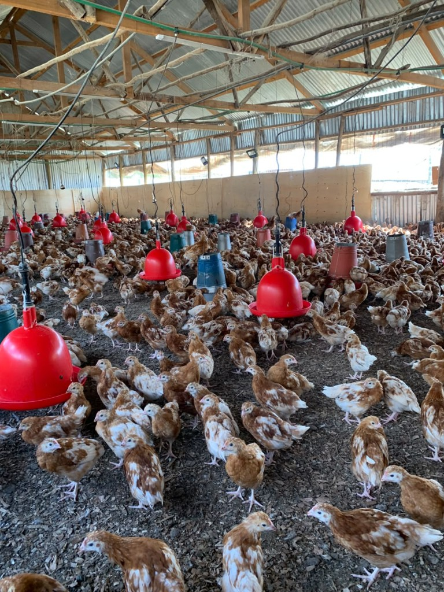
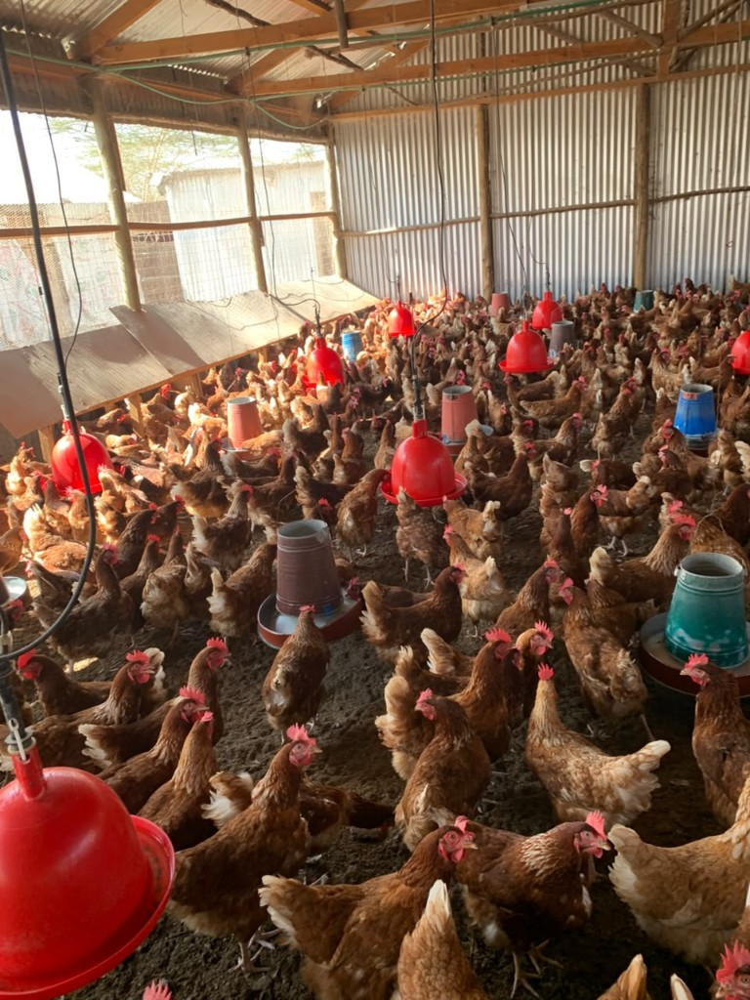
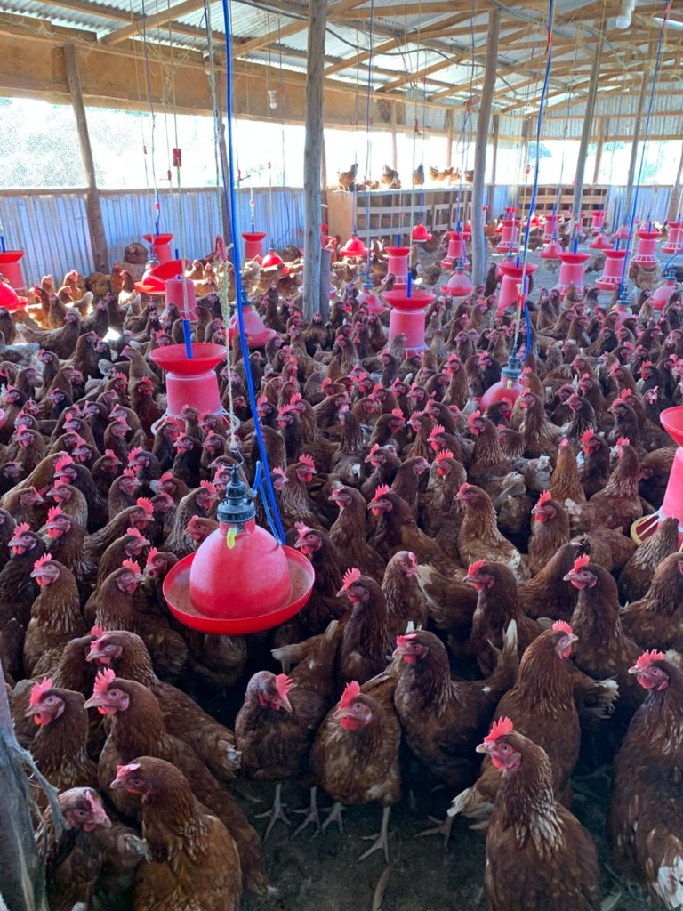

Programmes & support
Services
Layer and broiler contract farming, pullets, point-of-lay birds, active layers, and consultancy.
Layers
Layer contract farming
Our layer contract farming programme supports farmers who want to participate in layer production through a structured partnership. AVSL supplies layer day-old chicks (DOCs) and supports rearing and management up to about 2½ months of age. Thereafter, the company buys back the birds under agreed terms and conditions.
The arrangement gives farmers support during early rearing and a structured market pathway. Quantities, pricing, bird quality requirements, timelines, buy-back terms and other conditions are agreed before commencement.
Full layer pathway
Pullets · POL · active layers
Beyond day-old layer chicks and contract farming, AVSL offers birds at different stages of the layer production cycle — a complete pathway from DOCs through supported rearing to productive stock.
-
Pullets
Supply of developed young layer birds for farmers who prefer to start beyond the early brooding stage.
-
Point-of-lay (POL) birds
Supply of birds approaching the stage of commencing egg production.
-
Active layers
Supply of mature, productive layer birds for farmers seeking established egg-producing stock.



Broilers
Broiler contract farming
A structured partnership for commercial broiler production. Participating farmers receive a 40% support contribution on broiler feed costs, subject to the applicable contract terms and conditions.
The arrangement is intended to reduce the farmer’s production burden while providing a market pathway. Specific quantities, pricing, feed support arrangements, production requirements, timelines, performance expectations and other terms are agreed before commencement.
Ask about joiningConsultancy
Poultry technical support
AVSL provides poultry consultancy and practical technical guidance to farmers seeking professional support in starting, improving or expanding their poultry enterprises.
Consultation fee: KES 3,000
Book a consult